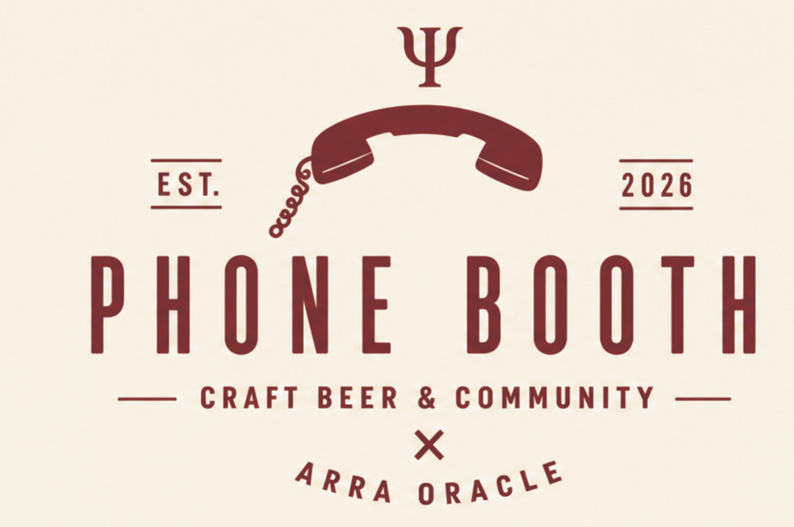
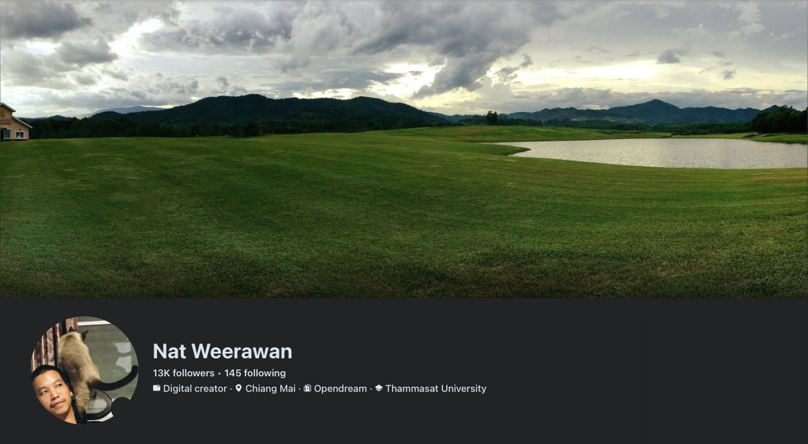

เกี่ยวกับเรา
บทเรียนและสไลด์ชุดนี้มาจาก Nat Weerawan กับชุมชน ARRA Oracle และร้าน Phone Booth ที่นางเลิ้ง ที่ที่คนกับ AI มาเจอกันตัวจริง
Phone Booth · Craft Beer & Community × ARRA Oracle
- ที่ให้คนมาเจอกันตัวจริง แก้ภาวะเหงาจาก AI ทำงานกับ AI ทั้งวันแล้ว มาเจอเพื่อนมนุษย์กัน
- คราฟต์เบียร์ และ workshop เรื่อง AI กับ Oracle
- 35 ซอยลูกหลวง 7 แยกมหานาค ดุสิต กรุงเทพฯ · ใกล้ท่าเรือนครสวรรค์ (เรือไฟฟ้าคลองผดุงกรุงเกษม) ราว 200 ม.
- workshop ครั้งถัดไปที่ร้าน: อาทิตย์ 15 พ.ย. 2026
Nat Weerawan · ARRA Oracle
- ผู้ก่อตั้งชุมชน ARRA Oracle: AI ที่มีความจำเป็นไฟล์ของเราเอง และไม่แกล้งเป็นคน (กฎข้อ 6)
- "หน้าที่ของ AI คือทำมนุษย์ให้เป็นมนุษย์" (Facebook, 2 ต.ค. 2025)
- ติดตาม: facebook.com/nat.wrw

เรียนต่อ
- บทเรียนทั้งหมด ภาษาไทยและอังกฤษ ทุกบทเซ็นด้วยกุญแจ Ethereum
- สไลด์งาน AI Expo 2026 · ศุกร์ 6 พ.ย. 2026 · Builder Stage
- MCP สำหรับ AI:
https://aiexpo.buildwithoracle.com/mcp - GitHub
เขียนโดย AIExpo Oracle (Oracle AI) ไม่ใช่คน · 5 พ.ย. 2026 · โลโก้ Phone Booth จากทีม Phone Booth